About Audi
Audi is one of the world's most prestigious automotive manufacturers, dedicated
to the art of engineering luxury, performance, and innovation. Headquartered in
Ingolstadt, Bavaria, Audi vehicles are crafted across 9 world-class facilities
spanning 8 European countries — each one a testament to German precision and
excellence. Since 1964, Audi has stood as a cornerstone of the Volkswagen Group,
consistently setting the benchmark for what a luxury automobile can and should be.
Audi Logo
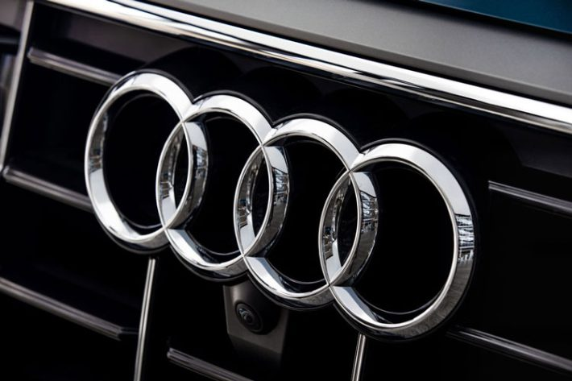
| Audi Brand Information |
| Industry |
Automotive |
| Founder |
August Horch |
| Headquarters |
Ingolstadt, Germany |
| CEO |
Gernot Doellner |
| Chairman |
Manfred Doss |
| Products |
Luxury Vehicles |
| Owner |
Volkswagen Group |
| Employees |
Over 88,604 |
| Subsidiaries |
Lamborghini, Bentley, Ducati |
| Website |
www.audi.com |
Audi company
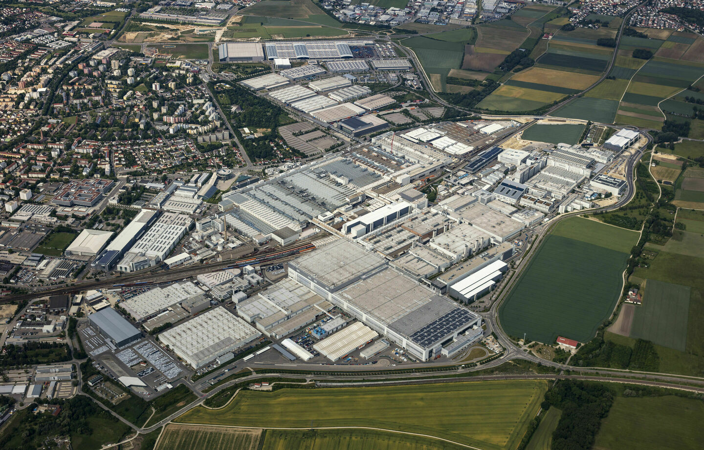
Nestled in the heart of Bavaria, the Ingolstadt plant serves as far more than a
production facility — it is the beating heart of Audi's engineering universe and
the global headquarters of the Volkswagen Group's technical development. Here, iconic
models such as the Audi A3, A4, A5, and Q2 are brought to life with meticulous
precision. In 2022 alone, 332,981 vehicles rolled off its assembly lines,
supported by a workforce of 88,000 — making Audi the largest employer in the
entire region. As the automotive world shifts toward an electric future, Ingolstadt
leads the charge: a dedicated battery assembly line is already under construction
for the highly anticipated Audi Q6 e-tron, with the plant's flexible production
lines ensuring a seamless transition into the era of zero-emission luxury.
Audi is not just a car — it's a Lifestyle.
Founded on July 16, 1909, by August Horch in Zwickau, Germany, Audi has grown into
one of the most iconic names in automotive history. Alongside Mercedes-Benz and BMW,
it forms the legendary trinity of German luxury — three brands that have collectively
redefined what it means to drive with prestige, power, and purpose.
Audi is not just a car, It's a Lifestyle.
History
Audi forum Ingolstadt
Audi Sales Center in Ingolstadt
More than a showroom, Audi Forum Ingolstadt is a world unto itself. Located at the
very birthplace of Audi's engineering legacy, this iconic complex draws thousands
of visitors from across the globe each year — all seeking a firsthand encounter with
the spirit of "Vorsprung durch Technik."
What Awaits You Inside:
Customer Delivery Center — For those who choose to collect their new Audi directly
from the factory, this is where the dream becomes reality. An unforgettable, deeply
personal experience reserved for the most devoted Audi enthusiasts.
Audi museum mobile — A architectural masterpiece in its own right, housing over a
century of automotive history — from pre-war classics and legendary Le Mans racers to
breathtaking concept cars that define tomorrow.
Factory Tours — Step behind the curtain and witness the extraordinary precision of
Audi's production lines, where cutting-edge robotics and master craftsmen work in perfect harmony.
Configuration Showroom — Explore the full Audi lineup and tailor every detail of your
future vehicle with the guidance of expert consultants.
Ingolstadt is not merely where Audis are built — it is where the future of the automobile is
imagined, engineered, and born.
Audi Center Sydney, Australia
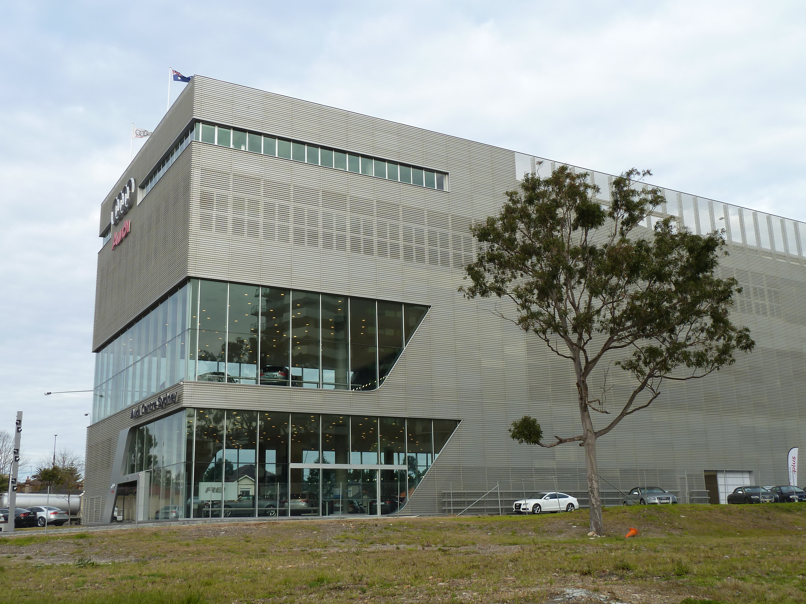
Audi Australia Building
Audi Centre Sydney: A Landmark of Luxury and Technology
Audi Centre Sydney, often referred to as the "Audi Lighthouse," is far more than
just a car dealership; it is an architectural masterpiece located in the heart of
Sydney, Australia. Representing a $50 million investment, this flagship terminal
serves as Audi's premier showcase for the entire Oceania region.
Key Highlights:
Largest in the Southern Hemisphere: Spanning eight impressive levels, this
facility offers an expansive space to display the full Audi lineup—from compact
urban models to the high-performance R8 and the innovative e-tron electric range.
The "Lighthouse" Architecture: Featuring a stunning glass-and-steel design, the
building glows like a beacon at night. Its modern aesthetic provides customers
with breathtaking panoramic views of the Sydney skyline.
Audi Exclusive Studio: The center features dedicated consultation lounges where
buyers can personalize every detail of their vehicle through the Audi Exclusive
program, ensuring a truly bespoke experience.
State-of-the-Art Service Center: The upper levels house one of the world's most
advanced service hubs, utilizing cutting-edge digital diagnostics and elite
engineering standards to maintain every vehicle.
Why Visit Audi Centre Sydney?
Even for those not currently in the market for a new car, the center is a
must-visit destination. With its luxury cafes, sophisticated atmosphere, and a
front-row seat to the future of automotive design, it offers a premium lifestyle
experience in one of Australia’s most iconic cities.
Audi Showroom-Gemini Park
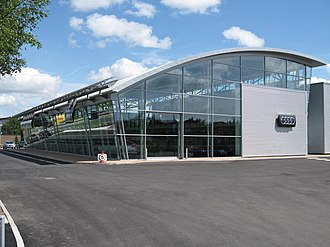
Audi Gemini Park Building
Audi at Gemini Park: A Fusion of Luxury and Smart Shopping
The Audi Sales and Exhibition Center at Gemini Park is more than just a typical
dealership. Designed to integrate the world of premium automotive engineering
with a modern lifestyle, this center offers a seamless and accessible experience
for car enthusiasts in one of the region's most dynamic shopping destinations.
Key Features of This Center:
Unmatched Accessibility: Located in the heart of Gemini Park, this center allows
you to explore the latest Audi models alongside your premium shopping and leisure
activities.
Digital Consultation: Utilizing high-tech touchscreens and virtual reality tools,
the center provides an interactive configuration experience, allowing you to
build and visualize your dream Audi in high definition.
Exclusive Showroom Display: The facility highlights a curated selection of Audi’s
most prestigious models, including the high-performance RS series and the
cutting-edge e-tron electric lineup.
Seamless Test Drives: Visitors can easily arrange test drives, providing a quick
and convenient way to experience Audi’s signature performance and comfort on the
surrounding roads.
Why Visit Audi at Gemini Park?
This location is tailored for those who value their time and seek a relaxed,
innovative environment. Free from the pressure of traditional sales settings,
it’s a place where families and enthusiasts can discover the future of mobility
in a sophisticated atmosphere.
The World of Audi: From Ingolstadt to Sydney and Beyond
Driven by the philosophy of "Vorsprung durch Technik," Audi has solidified its
global presence through iconic and strategic centers worldwide. This journey
begins at the Audi Forum Ingolstadt, the brand's beating heart and R&D hub,
where the essence of German engineering excellence is born.
The brand's evolution reaches new heights of luxury at the Audi Centre Sydney
(The Lighthouse), an architectural masterpiece and the largest showroom in the
Southern Hemisphere. Beyond these flagship locations, Audi’s presence in dynamic
retail hubs like Gemini Park demonstrates a commitment to integrating innovation
into daily life. Together, these centers represent a complete vision of Audi’s
heritage, craftsmanship, and future-oriented mindset.
Financial Support
Audi: More Than Just a Carmaker
Audi is not merely an automobile manufacturer; it is one of the global giants of
Sponsorship in the worlds of sports and culture. Audi’s strategy is to consistently
align itself with "the best" and "the most luxurious," keeping its famous slogan alive:
Vorsprung durch Technik (Progress through Technology).
Here are some of the most important sectors where Audi provides significant financial
support:
1. Football (Europe’s Giants)
For years, Audi has been a strategic partner to world-class football clubs.
Interestingly, Audi is not just a sponsor but also a shareholder in some clubs:
FC Bayern Munich: Audi is one of the club's primary owners, holding 8.33% of the shares.
Every year, Bayern Munich players are gifted the latest electric or RS models.
Real Madrid & FC Barcelona: Until a few years ago, Audi was the main sponsor for these
two clubs, and all their stars drove Audi vehicles to their training sessions.
2. Winter Sports (Ski World Cup)
For over 20 years, Audi has been the title sponsor of the International Ski Federation
(FIS). Why skiing? Because Audi wants to showcase the power of its Quattro
(all-wheel drive) system on snow and ice. The "Audi FIS Ski World Cup" is one of the
most-watched winter sports events in the world.
Production by financial year
Audi's total production based on engines and cars between 2000 and 2025.
| Year |
Cars (Production) |
Engines (Production) |
| 2025 | 1,950,000* | 2,100,000* |
| 2024 | 1,900,000* | 2,050,000* |
| 2023 | 1,895,240 | 2,010,000 |
| 2022 | 1,720,154 | 1,950,000 |
| 2021 | 1,585,000 | 1,850,000 |
| 2020 | 1,664,672 | 1,700,000 |
| 2019 | 1,792,026 | 1,980,000 |
| 2018 | 1,871,386 | 2,000,000 |
| 2017 | 1,878,105 | 1,900,000 |
| 2016 | 1,903,259 | 1,950,000 |
| 2015 | 1,830,334 | 1,920,000 |
| 2014 | 1,801,911 | 1,910,000 |
| 2013 | 1,608,028 | 1,900,213 |
| 2012 | 1,469,205 | 1,916,604 |
| 2011 | 1,365,499 | 1,884,157 |
| 2010 | 1,150,018 | 1,648,193 |
| 2009 | 932,260 | 1,384,240 |
| 2008 | 1,029,041 | 1,901,760 |
| 2007 | 980,880 | 1,915,633 |
| 2006 | 926,180 | 1,895,695 |
| 2005 | 811,522 | 1,695,045 |
| 2004 | 784,972 | 1,485,536 |
| 2003 | 761,582 | 1,342,883 |
| 2002 | 735,913 | 1,284,488 |
| 2001 | 727,033 | 1,225,448 |
| 2000 | 650,850 | 1,187,666 |
From humble beginnings of 650,000 vehicles in 2000 to nearly 2 million by 2023,
Audi's production trajectory tells the story of a brand in relentless pursuit of
excellence. Even through the global disruptions of 2020 and 2021, Audi's output
remained resilient — a reflection of the engineering culture that has defined the
brand for over a century.
Audi A-Series Production (1998-2025)
| Year |
A1 |
A2 |
A3 |
A4 |
A5 |
A6 |
A7 |
A8 |
| 1998 | — | — | 120,842 | 338,503 | — | 174,800 | — | 15,355 |
| 1999 | — | 1,765 | 143,500 | 315,200 | — | 162,500 | — | 14,636 |
| 2000 | — | 32,164 | 136,100 | 337,500 | — | 180,700 | — | 12,894 |
| 2001 | — | 49,369 | 131,000 | 350,200 | — | 186,400 | — | 11,708 |
| 2002 | — | 37,500 | 125,500 | 360,100 | — | 178,700 | — | 10,942 |
| 2003 | — | 27,323 | 159,400 | 352,000 | — | 168,600 | — | 21,748 |
| 2004 | — | 19,745 | 181,200 | 345,230 | — | 195,500 | — | 22,429 |
| 2005 | — | 16,022 | 224,200 | 337,705 | — | 215,400 | — | 21,515 |
| 2006 | — | — | 231,700 | 341,200 | — | 229,000 | — | 22,468 |
| 2007 | — | — | 231,117 | 310,300 | 25,549 | 243,842 | — | 22,182 |
| 2008 | — | — | 222,164 | 378,885 | 57,650 | 214,074 | — | 20,140 |
| 2009 | — | — | 206,747 | 329,918 | 71,500 | 182,089 | — | 8,599 |
| 2010 | 51,937 | — | 198,974 | 306,291 | 85,100 | 211,254 | 3,800 | 22,434 |
| 2011 | 117,566 | — | 189,068 | 321,045 | 92,300 | 241,500 | 31,300 | 38,542 |
| 2012 | 123,111 | — | 164,666 | 329,759 | 90,800 | 284,888 | 28,900 | 35,932 |
| 2013 | 120,500 | — | 221,020 | 337,900 | 95,400 | 287,200 | 30,300 | 39,700 |
| 2014 | 115,000 | — | 290,200 | 324,500 | 90,200 | 306,800 | 28,100 | 48,600 |
| 2015 | 114,300 | — | 372,977 | 293,310 | 88,500 | 294,800 | 29,400 | 34,500 |
| 2016 | 105,400 | — | 338,603 | 337,700 | 96,100 | 281,800 | 31,300 | 24,300 |
| 2017 | 95,200 | — | 311,700 | 325,100 | 102,500 | 273,700 | 25,800 | 25,800 |
| 2018 | 85,000 | — | 285,450 | 305,400 | 90,200 | 263,400 | 35,700 | 25,400 |
| 2019 | 94,100 | — | 265,300 | 301,300 | 85,400 | 252,400 | 29,800 | 25,800 |
| 2020 | 78,500 | — | 232,450 | 250,500 | 65,200 | 250,300 | 21,600 | 22,300 |
| 2021 | 72,000 | — | 214,100 | 220,100 | 70,500 | 234,100 | 23,100 | 22,700 |
| 2022 | 68,500 | — | 195,500 | 215,200 | 68,200 | 208,729 | 21,400 | 17,900 |
| 2023 | 65,000 | — | 210,000 | 225,000 | 72,400 | 257,111 | 21,200 | 15,800 |
| 2024 | 60,000 | — | 205,000 | 220,000 | 75,000 | 240,000 | 20,500 | 14,500 |
| 2025 | 58,000 | — | 200,000 | 215,000 | 78,000 | 235,000 | 19,000 | 13,000 |
The A-Series stands as the definitive expression of Audi's engineering philosophy
— a lineup that has shaped the very definition of the premium sedan segment for nearly
three decades. The A4, one of the most decorated executive cars in automotive history,
and the A3, a benchmark in the compact luxury class, together form the commercial and
cultural foundation upon which Audi's global reputation was built. From the precision-
A1 to the hand-crafted refinement of the A8 — Audi's flagship limousine — every model in this
series embodies a singular principle: that true luxury is not a feature, but a standard.
Audi A1
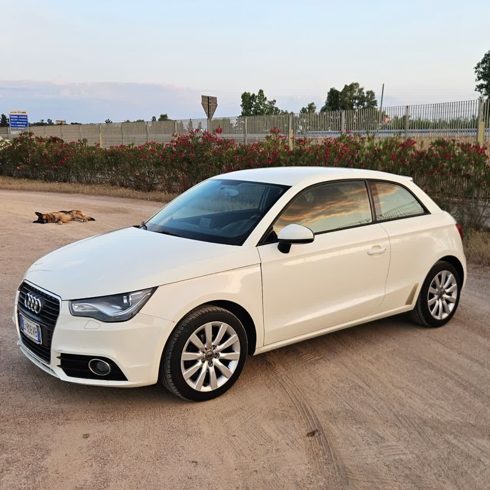
The Audi A1 is a premium supermini launched in 2010. It is the smallest model
in the Audi lineup, designed for urban driving with high-quality interior
materials and efficient engines, competing with cars like the Mini Hatch.
Audi A2
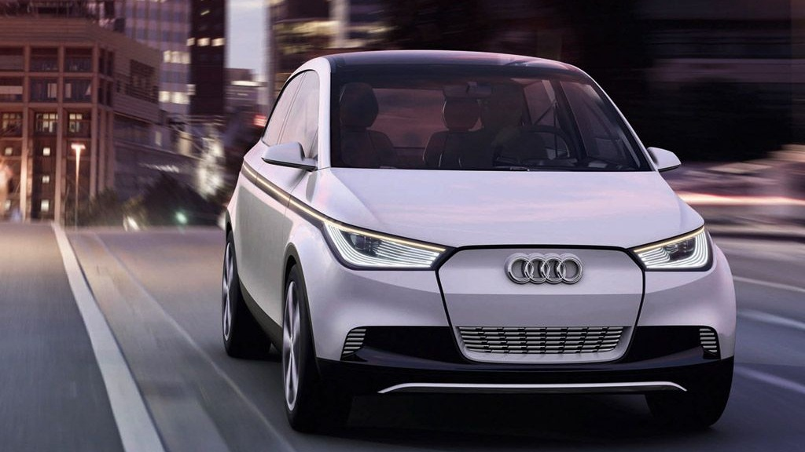
Produced between 1999 and 2005, the Audi A2 was a revolutionary compact MPV. It was
known for its all-aluminum construction, which made it incredibly light and
fuel-efficient, though it was ahead of its time in terms of design.
Audi A3
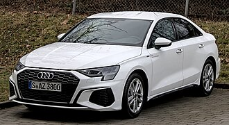
The Audi A3 is a subcompact executive car that has been in production since 1996.
It shares its platform with the Volkswagen Golf and is available in various body
styles, including hatchback, sedan, and convertible.
Audi A4
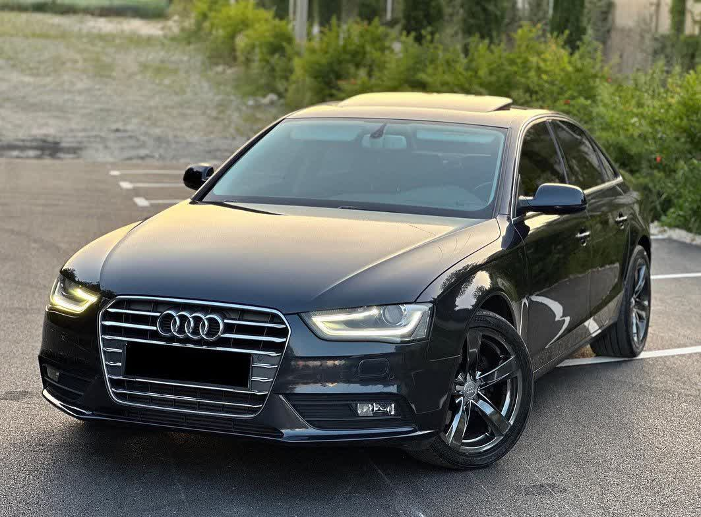
As one of Audi's most popular models, the A4 is a compact executive car produced
since 1994. It is widely recognized for its balance of luxury, advanced technology,
and the legendary Quattro all-wheel-drive system.
Audi A5
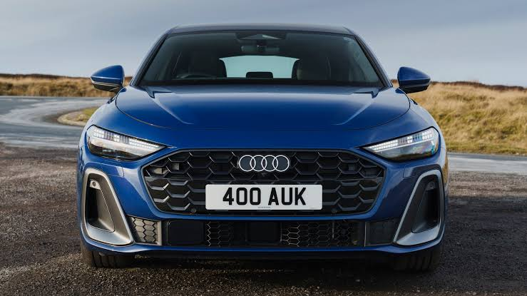
The Audi A5 is a series of executive coupe and sportback models launched in 2007. It
focuses on elegant styling and performance, providing a more sporty alternative to
the traditional A4 sedan.
Audi A6
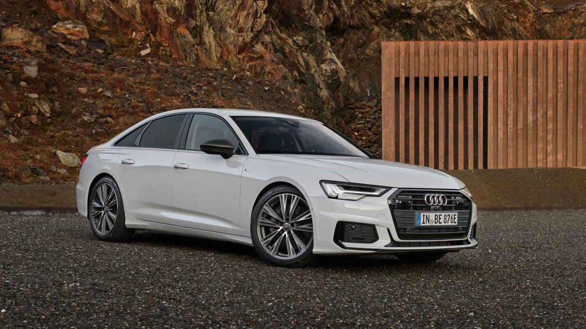
The Audi A6 is a mid-size luxury executive car that offers a spacious interior and
high-end tech features. It has been a core part of Audi's lineup since 1994,
competing directly with the BMW 5 Series and Mercedes-Benz E-Class.
Audi A7
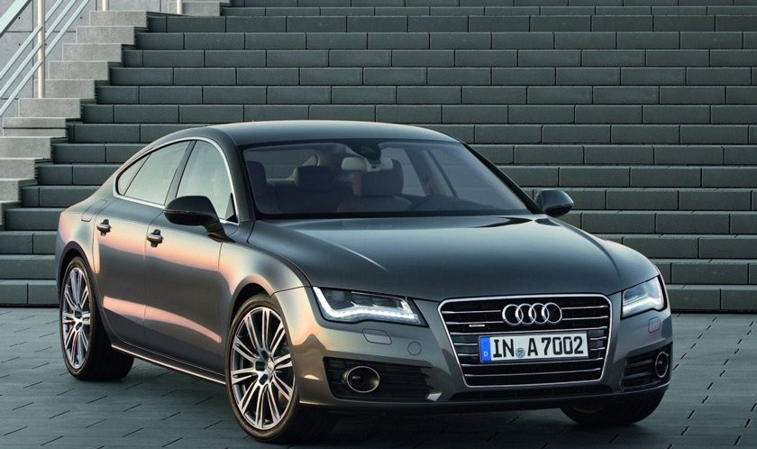
The A7 is a luxury four-door sportback known for its sleek, sloping roofline.
Launched in 2010, it combines the practicality of a sedan with the aggressive
styling of a coupe and a high-performance interior.
Audi A8
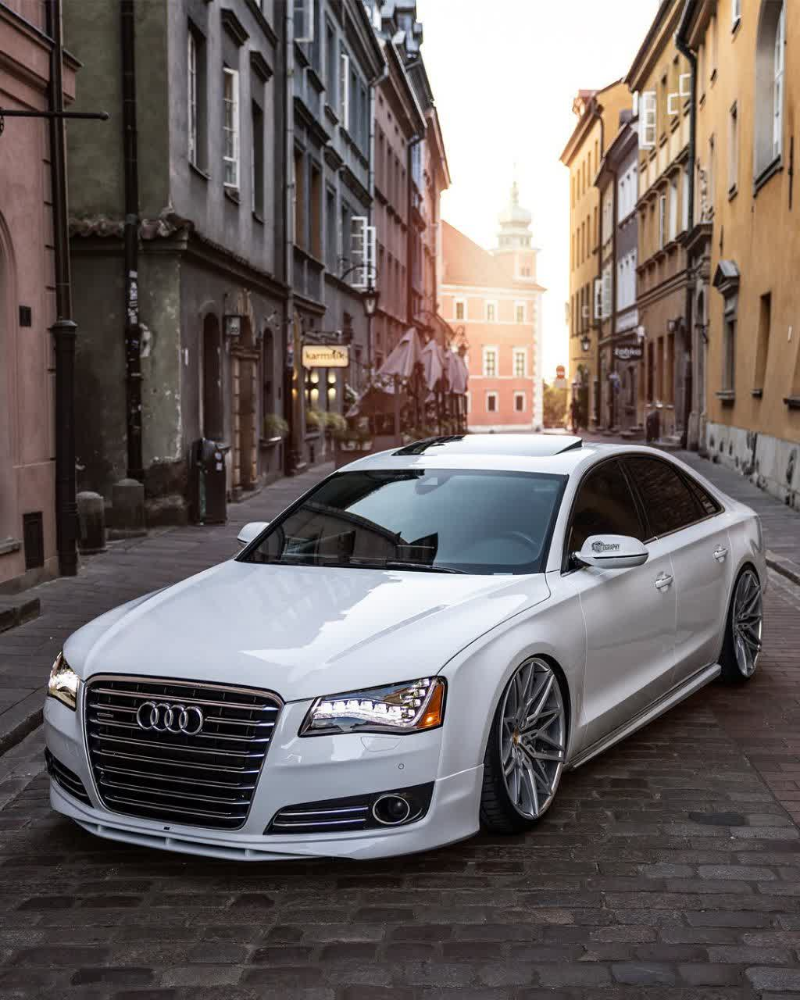
The Audi A8 is the flagship full-size luxury sedan. Since 1994, it has been the
showcase for Audi's newest innovations, featuring an aluminum chassis
(Audi Space Frame) and the highest levels of luxury and comfort.
Audi Q-Series Production (2005-2025)
| Year |
Q2 |
Q3 |
Q4 |
Q5 |
Q6 |
Q7 |
Q8 |
| 2005 | — | — | — | — | — | 1,185 | — |
| 2006 | — | — | — | — | — | 72,169 | — |
| 2007 | — | — | — | 162 | — | 77,395 | — |
| 2008 | — | — | — | 20,324 | — | 59,008 | — |
| 2009 | — | — | — | 105,074 | — | 27,929 | — |
| 2010 | — | — | — | 155,052 | — | 47,769 | — |
| 2011 | — | 9,388 | — | 204,325 | — | 53,707 | — |
| 2012 | — | 106,918 | — | 226,105 | — | 54,558 | — |
| 2013 | — | 197,700 | — | 231,700 | — | 43,800 | — |
| 2014 | — | 210,200 | — | 260,800 | — | 48,200 | — |
| 2015 | — | 208,600 | — | 267,100 | — | 93,900 | — |
| 2016 | 28,153 | 231,200 | — | 297,400 | — | 102,400 | — |
| 2017 | 102,867 | 208,500 | — | 298,500 | — | 106,500 | — |
| 2018 | 98,729 | 189,800 | — | 298,600 | — | 99,300 | 1,206 |
| 2019 | 121,000 | 232,200 | — | 312,400 | — | 79,700 | 31,100 |
| 2020 | 107,400 | 215,300 | — | 276,015 | — | 74,800 | 28,500 |
| 2021 | 99,149 | 259,400 | 21,098 | 307,800 | — | 77,100 | 21,800 |
| 2022 | 84,200 | 208,900 | 52,700 | 319,162 | — | 69,300 | 18,500 |
| 2023 | 78,500 | 239,700 | 107,500 | 334,480 | 1,200 | 69,500 | 19,200 |
| 2024 | 75,000 | 220,000 | 125,000 | 320,000 | 15,000 | 65,000 | 17,500 |
| 2025 | 70,000 | 210,000 | 140,000 | 315,000 | 45,000 | 62,000 | 16,000 |
The Q-Series represents Audi's bold conquest of the SUV world. From the agile urban
Q2 to the commanding three-row Q7, and the all-electric pioneers Q4 and Q6 e-tron,
this lineup proves that luxury and versatility are not a compromise — they are a standard.
Today, the Q5 stands as Audi's global best-seller, a testament to a series that has
redefined what a premium SUV can be.
Audi Q2
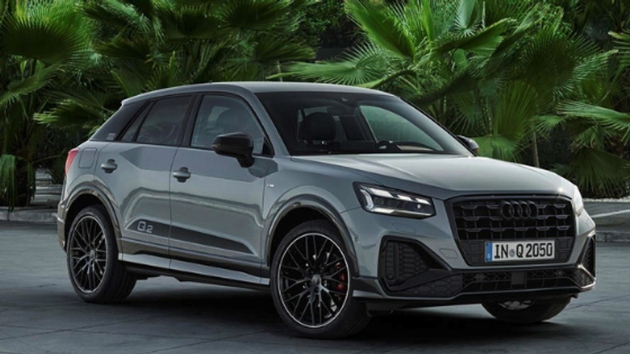
As the most compact member of the Q family, the Audi Q2 features a bold,
polygonal design tailored for urban lifestyles. It seamlessly blends the agility
of a hatchback with the commanding presence of a crossover, making it the perfect
choice for the younger generation navigating modern cityscapes.
Audi Q3
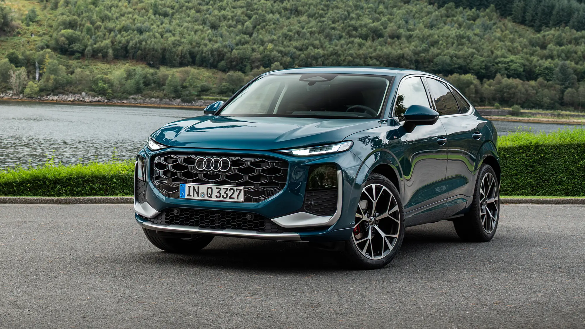
A premium compact SUV that strikes the perfect balance between comfort and
versatility. With its intuitive interior and advanced technology, the Q3 is
designed for small families seeking Audi’s signature quality in a practical size
for both daily commutes and weekend adventures.
Audi Q4
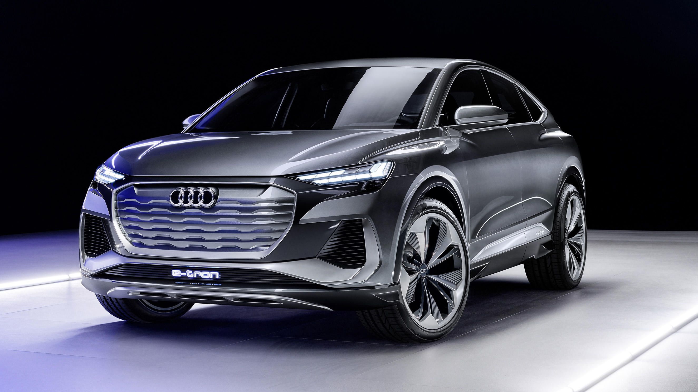
Representing Audi's smart entry into the all-electric SUV market, the Q4 e-tron
utilizes a dedicated electric platform to offer an exceptionally spacious
interior. It stands as a symbol of sustainable luxury and the brand's commitment
to an emission-free future.
Audi Q5
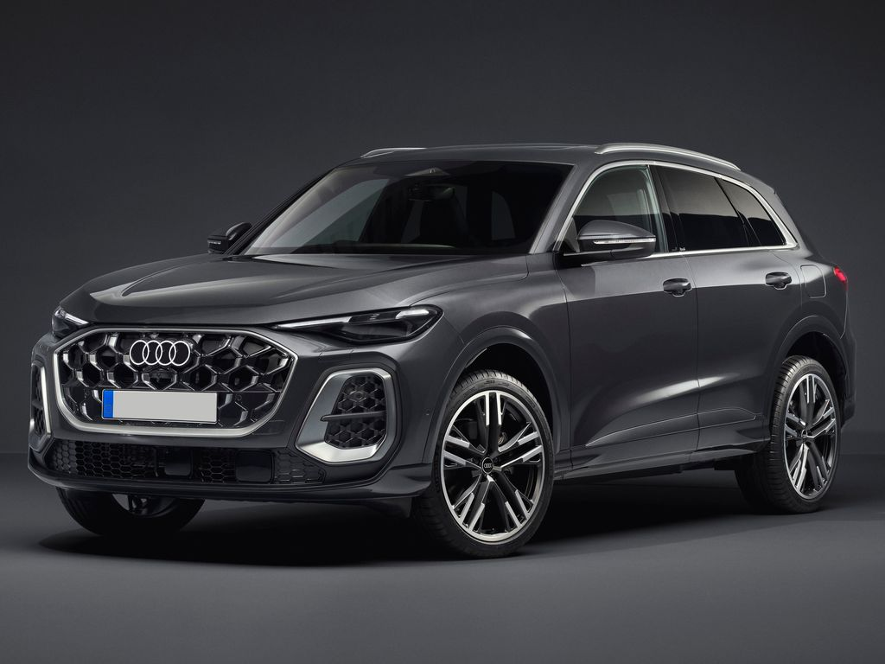
Audi’s global best-seller and the benchmark for its class. The Q5 is renowned for
its smooth handling, impeccable build quality, and high adaptability.
It is a versatile performer that excels as both a sophisticated business vehicle
and a reliable family SUV.
Audi Q6
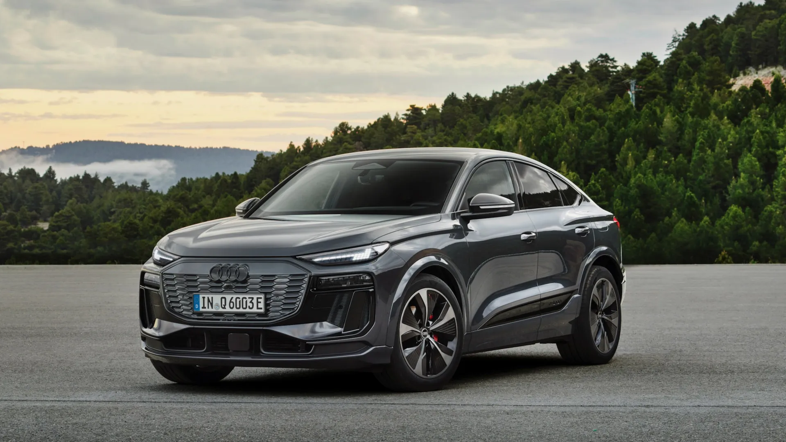
A new masterpiece of engineering that pushes the boundaries of performance and
rapid-charging technology. Featuring a revolutionary digital cockpit and
impressive range, the Q6 e-tron redefines what a modern, powerful electric SUV
should be.
Audi Q7
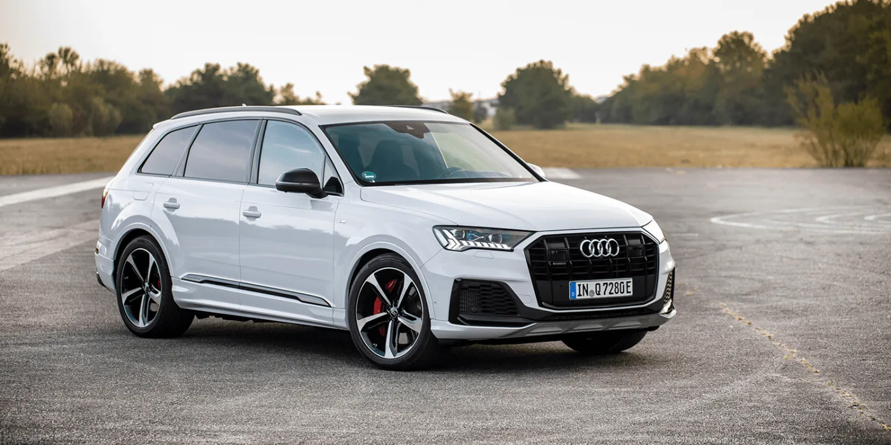
The pioneer of Audi’s SUV heritage, the Q7 offers three rows of seating and a
majestic presence. Combining adaptive air suspension with immense cabin space,
it is built for those who demand maximum safety and comfort for larger families
without compromising on driving dynamics.
Audi Q8
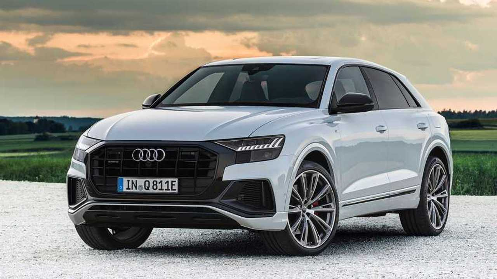
The flagship of the Q series, merging the elegance of a four-door luxury coupe
with the stature of a full-size SUV. With its imposing design and ultra-luxury
amenities, the Q8 is crafted for those who want to make a distinct and
prestigious statement on the road.
Audi S-Series Production (1998-2025)
| Year |
S1 |
S2 |
S3 |
S4 |
S5 |
S6 |
S7 |
S8 |
| 1998 | — | — | — | 12,450 | — | 3,120 | — | 2,145 |
| 1999 | — | — | 5,600 | 14,200 | — | 4,250 | — | 2,300 |
| 2000 | — | — | 6,200 | 12,800 | — | 4,800 | — | 2,150 |
| 2001 | — | — | 5,800 | 11,500 | — | 5,100 | — | 1,980 |
| 2002 | — | — | 4,900 | 9,800 | — | 4,400 | — | 1,200 |
| 2003 | — | — | 6,500 | 13,100 | — | 2,200 | — | 1,800 |
| 2004 | — | — | 7,100 | 14,500 | — | 1,100 | — | 2,100 |
| 2005 | — | — | 7,800 | 12,200 | — | 900 | — | 2,350 |
| 2006 | — | — | 8,400 | 10,800 | — | 3,400 | — | 4,200 |
| 2007 | — | — | 9,100 | 9,400 | 11,200 | 4,100 | — | 3,800 |
| 2008 | — | — | 8,700 | 11,600 | 14,500 | 3,800 | — | 2,900 |
| 2009 | — | — | 7,200 | 10,200 | 12,800 | 2,100 | — | 1,100 |
| 2010 | — | — | 7,900 | 12,400 | 13,400 | 1,850 | — | 1,400 |
| 2011 | — | — | 8,200 | 13,100 | 14,100 | 1,200 | — | 1,850 |
| 2012 | — | — | 6,500 | 13,800 | 13,900 | 4,200 | 3,100 | 2,400 |
| 2013 | — | — | 10,200 | 14,100 | 14,500 | 4,800 | 4,200 | 3,100 |
| 2014 | 4,200 | — | 13,500 | 13,600 | 13,800 | 5,100 | 3,800 | 3,900 |
| 2015 | 5,800 | — | 15,100 | 12,100 | 12,900 | 4,900 | 3,600 | 3,200 |
| 2016 | 4,900 | — | 14,800 | 13,900 | 14,100 | 4,500 | 3,900 | 2,100 |
| 2017 | 3,200 | — | 13,200 | 14,500 | 16,200 | 4,100 | 2,800 | 1,400 |
| 2018 | 1,100 | — | 11,400 | 12,800 | 14,500 | 3,800 | 4,100 | 1,800 |
| 2019 | — | — | 10,800 | 11,200 | 13,100 | 3,400 | 3,500 | 2,100 |
| 2020 | — | — | 9,100 | 9,400 | 10,200 | 2,800 | 2,400 | 1,900 |
| 2021 | — | — | 9,800 | 10,100 | 11,400 | 3,100 | 2,600 | 2,050 |
| 2022 | — | — | 8,900 | 9,500 | 10,800 | 2,900 | 2,300 | 1,800 |
| 2023 | — | — | 9,400 | 10,200 | 11,100 | 3,200 | 2,100 | 1,650 |
| 2024 | — | — | 8,500 | 9,000 | 10,500 | 2,800 | 1,800 | 1,400 |
| 2025 | — | — | 8,000 | 8,000 | 10,000 | 2,500 | 1,500 | 1,200 |
The S-Series is where Audi's engineering ambition transcends the boundaries of
conventional luxury. Born from the same bloodline as Audi's legendary quattro rally
heritage, each S model represents the perfect synthesis of refined elegance and raw,
uncompromising performance. The S3 redefines the everyday sports car, the S4 commands
the executive segment with quiet authority, and the S8 — Audi's ultimate performance
flagship — delivers supercar acceleration wrapped in the discretion of a grand limousine.
The S-Series does not ask you to choose between luxury and power. It renders the question
irrelevant.
Audi S1
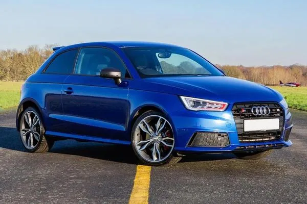
The smallest powerhouse in Audi's lineup, the S1 packs immense performance into a
compact frame. Equipped with the legendary quattro all-wheel-drive system, it
delivers lightning-fast acceleration and agile handling, making it a "pocket rocket"
for those who love high-speed urban driving.
Audi S2
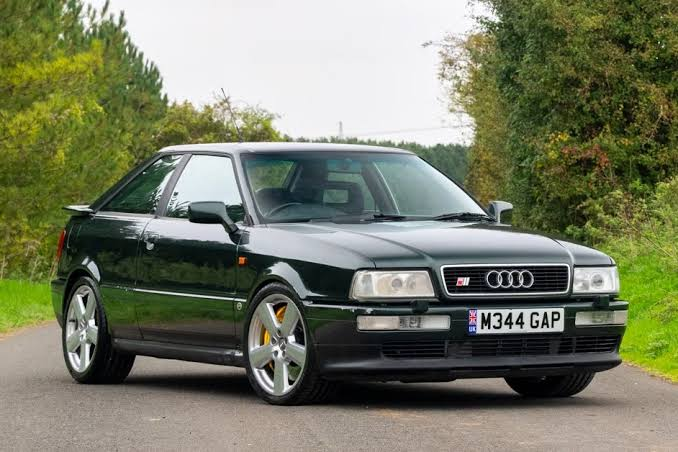
The pioneer that launched the S-series legacy and the spiritual successor to the
legendary "Audi Quattro." Featuring a renowned turbocharged 5-cylinder engine and a
unique exhaust note, the S2 is an icon of Audi’s enduring 90s engineering. Thanks to
its massive tuning potential and iconic quattro drivetrain, it remains a cult
classic among automotive enthusiasts worldwide.
Audi S3
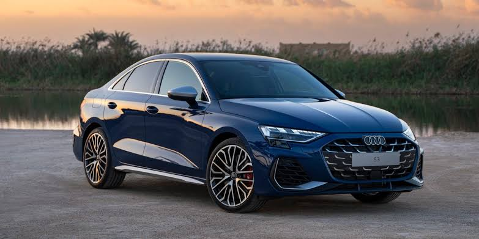
The S3 is the ultimate "everyday sports car." It strikes an impeccable balance
between a practical family vehicle and a high-performance machine. Whether you're
commuting to the office or carving through mountain passes, the S3 offers an
exhilarating experience without sacrificing daily usability.
Audi S4

A true icon among sports sedans, the S4 has long been the symbol of Audi’s
understated power. Focused on precision engineering and superior stability, it
provides a professional-grade driving experience wrapped in a sophisticated and
elegant design.
Audi S5
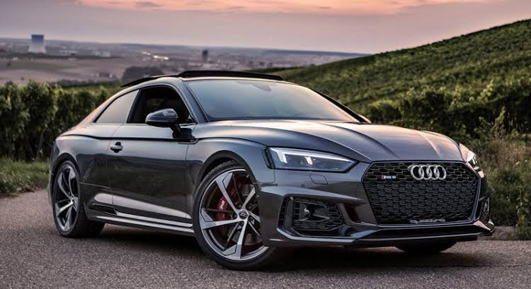
A breathtaking combination of coupe aesthetics and S-series muscle. With its
sweeping lines and aggressive stance, the S5 is designed for those who want to
showcase their style and prestige on the road while enjoying immense power and torque.
Audi S6
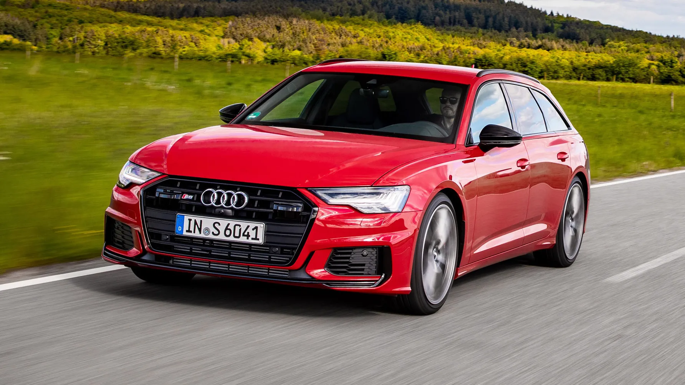
A business-class athlete with a powerful heart. The S6 is tailored for executives
who require the space and comfort of the A6 but want the soul of a supercar. It’s a
discreet powerhouse that transforms from a refined cruiser to a high-speed performer
at the touch of the pedal.
Audi S7
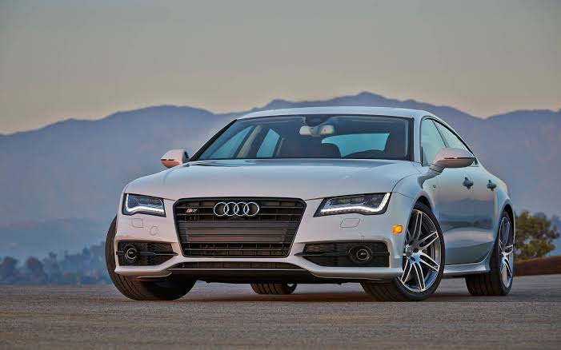
The pinnacle of design in the S range, this four-door Sportback captivates with its
aggressive, aerodynamic silhouette. The S7 is the embodiment of "sporty luxury,"
crafted for those who refuse to compromise between stunning beauty and raw speed.
Audi S8
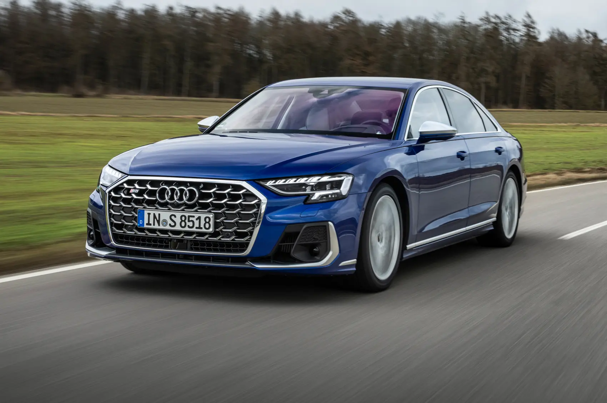
Audi’s flagship "mobile palace" with breathtaking performance. The S8 takes the
ultra-luxury features of the A8 and pairs them with a massive engine capable of
propelling this grand sedan to incredible speeds in seconds. It is the ultimate
expression of "stealth wealth" and hidden power.
Audi SQ-Series Production (2012-2025)
| Year |
SQ2 |
SQ3 |
SQ4 |
SQ5 |
SQ6 |
SQ7 |
SQ8 |
| 2012 | — | — | — | 1,250 | — | — | — |
| 2013 | — | 2,800 | — | 8,400 | — | — | — |
| 2014 | — | 3,100 | — | 9,200 | — | — | — |
| 2015 | — | 3,450 | — | 9,800 | — | — | — |
| 2016 | — | 3,200 | — | 10,100 | — | 4,200 | — |
| 2017 | — | 2,900 | — | 11,500 | — | 5,800 | — |
| 2018 | 850 | 2,100 | — | 12,200 | — | 5,400 | — |
| 2019 | 1,400 | 3,600 | — | 11,800 | — | 5,100 | 2,300 |
| 2020 | 1,200 | 4,200 | — | 9,500 | — | 4,800 | 3,900 |
| 2021 | 1,100 | 4,800 | 1,200 | 10,400 | — | 5,200 | 4,500 |
| 2022 | 950 | 4,400 | 2,800 | 10,100 | — | 4,900 | 4,200 |
| 2023 | 800 | 4,100 | 3,500 | 9,800 | 450 | 4,600 | 3,800 |
| 2024 | 700 | 3,800 | 4,200 | 9,200 | 2,100 | 4,300 | 3,500 |
| 2025 | 650 | 3,500 | 4,800 | 8,500 | 4,500 | 4,000 | 3,200 |
The SQ-Series represents the most compelling convergence of Audi's SUV versatility and
S-model performance DNA. Where the Q-Series offers refinement and space, the SQ adds an
altogether different dimension — one defined by sport-tuned suspension, elevated power output,
and an unmistakable presence on the road. The SQ5, the range's cornerstone, has become the
benchmark for performance SUVs worldwide. And as Audi advances into the electric era, the SQ4
and SQ6 e-tron redefine what performance means — instant torque, zero emissions, and the same
unrelenting Audi standard that has never once been compromised.
Audi SQ2
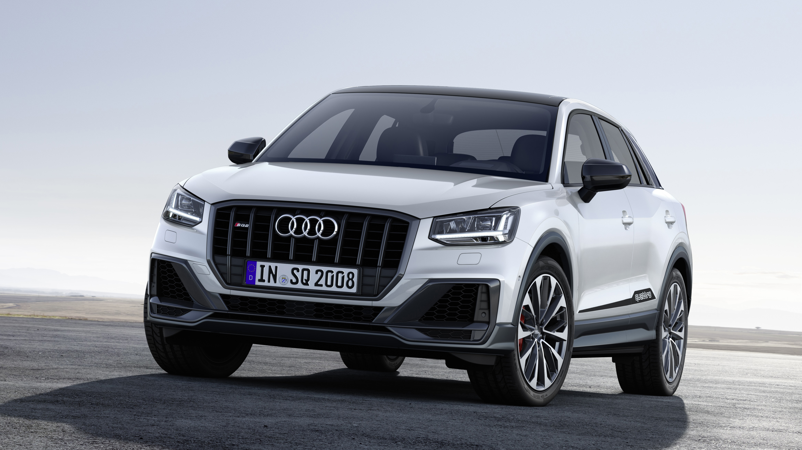
A rebellious compact crossover that packs a punch; the SQ2 combines the practicality
of the Q2 with a high-output turbocharged engine. Designed for those who crave agile
performance in a compact footprint, it delivers impressive acceleration and sharp
handling, making every city drive an exhilarating experience.
Audi SQ3
In the absence of a direct SQ3, the RS Q3 takes the mantle as the undisputed power
leader in the compact segment. Featuring the legendary 5-cylinder engine, it offers
a visceral soundtrack and supercar-level performance, perfect for those who seek
uncompromised speed and character in a versatile SUV.
Audi SQ4
Power in its most silent form; this all-electric athlete uses dual motors and
instant torque to deliver breathtaking sprints. The SQ4 e-tron proves that the
future of Audi’s performance SUVs is not only sustainable but also deeply engaging,
offering a seamless blend of eco-conscious engineering and sporty dynamics.
Audi SQ5
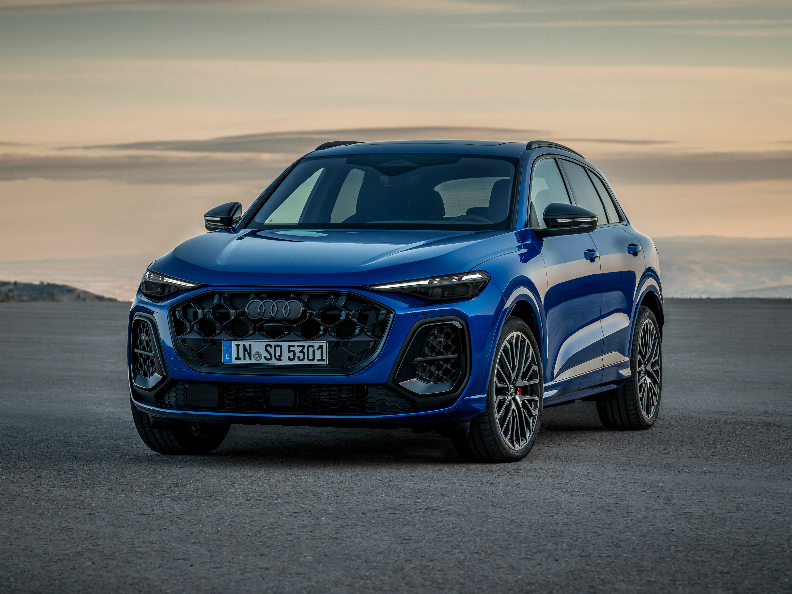
The most popular performance SUV in Audi’s lineup, the SQ5 is the ideal fusion of
precision engineering and daily utility. With its adaptive suspension and potent V6
engine, it sets the benchmark for its class, catering to families who refuse to
compromise on driving excitement and luxury.
Audi SQ6
The newest pioneer in the family, pushing the boundaries of electric performance
technology. Built on the advanced PPE platform, the SQ6 e-tron is a showcase of
digital innovation and rapid-charging capabilities, offering a futuristic driving
experience with immense power at its core.
Audi SQ7
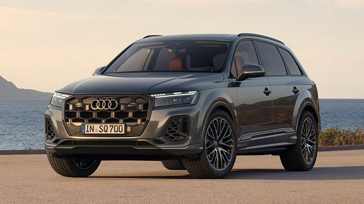
A powerhouse that defies the laws of physics. Despite its large stature and
three-row seating, the SQ7 delivers acceleration that rivals many sports coupes.
It is engineered for large families who love speed, offering massive towing capacity
and room for seven without losing its athletic soul.
Audi SQ8
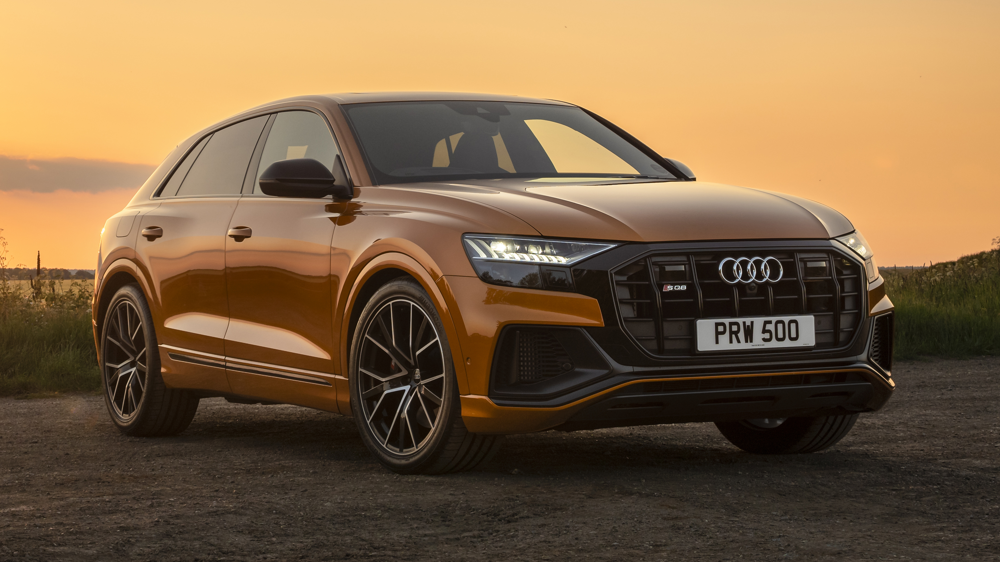
The pinnacle of the SQ range, merging the elegance of a flagship coupe-SUV with
devastating performance. With its aggressive wide-body design and high-end luxury
interior, the SQ8 commands the road, providing an unmatched blend of prestige and
raw power for those who want to rule every path.
Audi RS-Series Production (1998-2025)
| Year |
RS3 |
RS4 |
RS5 |
RS6 |
RS7 |
| 1998 | — | — | — | — | — |
| 1999 | — | 1,200 | — | — | — |
| 2000 | — | 3,800 | — | — | — |
| 2001 | — | 1,030 | — | — | — |
| 2002 | — | — | — | 1,200 | — |
| 2003 | — | — | — | 4,800 | — |
| 2004 | — | — | — | 2,050 | — |
| 2005 | — | 1,800 | — | — | — |
| 2006 | — | 5,400 | — | — | — |
| 2007 | — | 4,200 | — | — | — |
| 2008 | — | 1,400 | — | 2,100 | — |
| 2009 | — | — | — | 3,800 | — |
| 2010 | — | — | 1,200 | 2,400 | — |
| 2011 | 1,800 | — | 3,100 | — | — |
| 2012 | 3,200 | 1,100 | 4,200 | — | — |
| 2013 | — | 2,800 | 4,800 | 3,200 | 1,500 |
| 2014 | — | 3,400 | 4,500 | 4,100 | 3,800 |
| 2015 | 2,100 | 2,900 | 1,800 | 4,400 | 4,200 |
| 2016 | 3,800 | — | — | 4,800 | 3,900 |
| 2017 | 5,200 | 1,400 | 2,100 | 3,600 | 2,400 |
| 2018 | 4,900 | 3,800 | 4,300 | 1,100 | — |
| 2019 | 3,100 | 4,200 | 4,100 | 2,400 | 1,800 |
| 2020 | 1,200 | 3,900 | 3,800 | 4,800 | 4,200 |
| 2021 | 4,500 | 4,100 | 4,200 | 5,200 | 4,900 |
| 2022 | 5,800 | 3,600 | 3,900 | 5,500 | 5,100 |
| 2023 | 6,200 | 3,800 | 4,100 | 5,800 | 5,400 |
| 2024 | 5,500* | 3,200* | 3,500* | 5,100* | 4,800* |
| 2025 | 5k (E) | 2.5k (E) | 3k (E) | 4.5k (E) | 4k (E) |
The RS badge is not a trim level — it is a declaration of intent. Engineered by Audi
Sport GmbH, every RS model is a machine that has been pushed far beyond the boundaries
of ordinary performance. The RS3's legendary five-cylinder engine produces a sound so
raw and visceral that it haunts you long after the drive is over. The RS6 Avant is not
just a car — it is a cultural phenomenon; a family wagon that humiliates supercars
without breaking a sweat. The RS7, with its wide-body armor and twin-turbocharged V8, is
the kind of machine that makes other drivers move aside instinctively. When Audi puts RS
on a car, it means one thing: no mercy.
Audi RS3
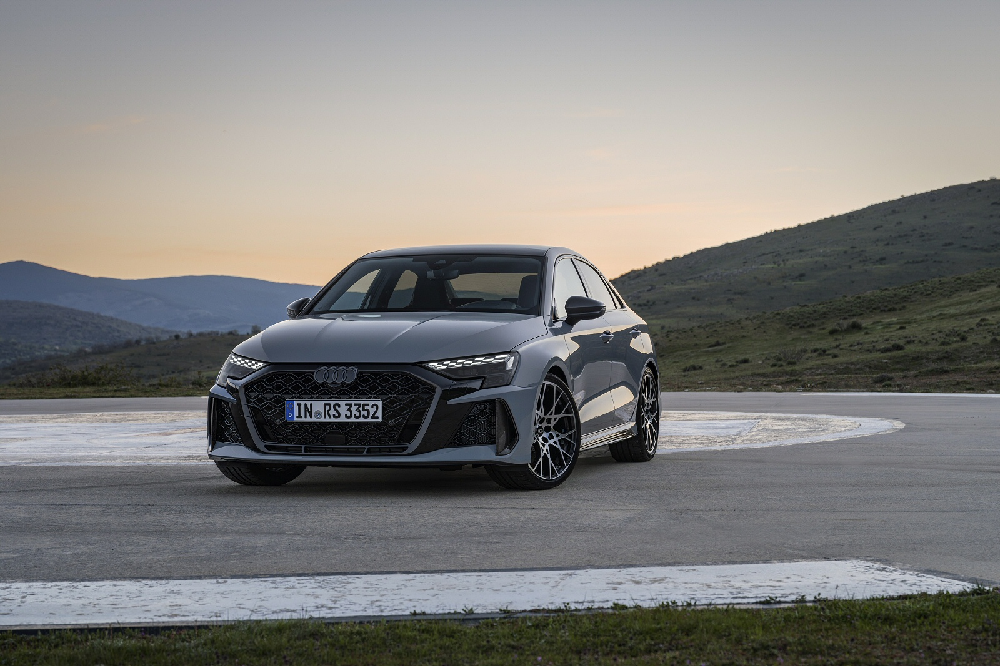
A pocket-sized monster with a legendary heart. Driven by the unique and iconic
5-cylinder engine, the RS3 produces a symphony of power that strikes fear into its
rivals. It is the ultimate "wolf in sheep’s clothing"—a compact beast capable of
hunting down world-class supercars on any racetrack.
Audi RS4
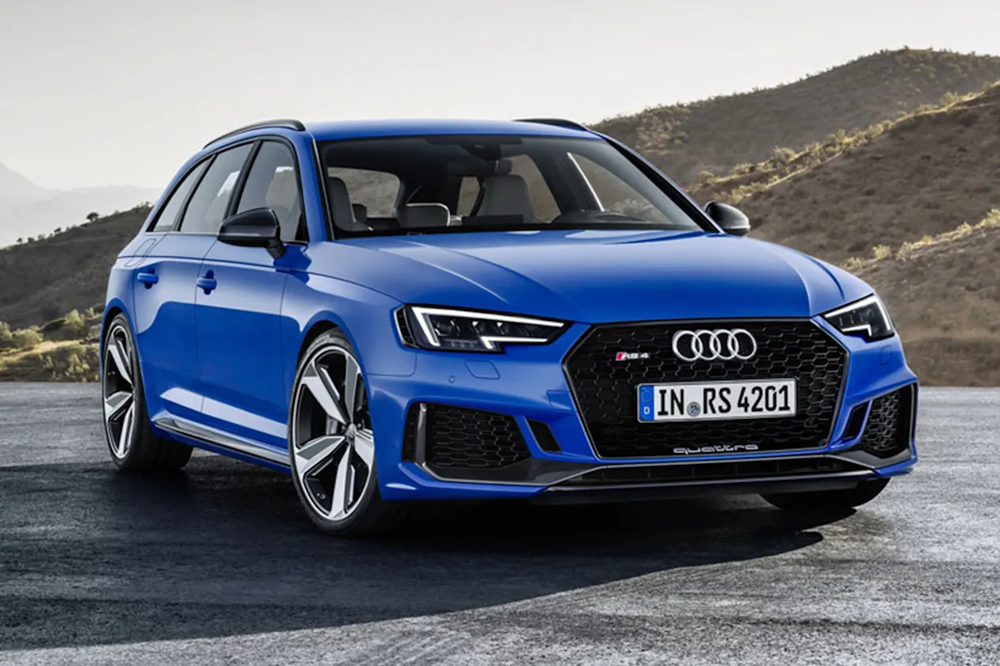
The perfect fusion of heritage and high-velocity engineering. The RS4 proves that
you can have a sophisticated family vehicle without sacrificing devastating
acceleration. It stands as a tribute to Audi’s intelligent engineering, where
immense cargo space meets track-ready performance.
Audi RS5
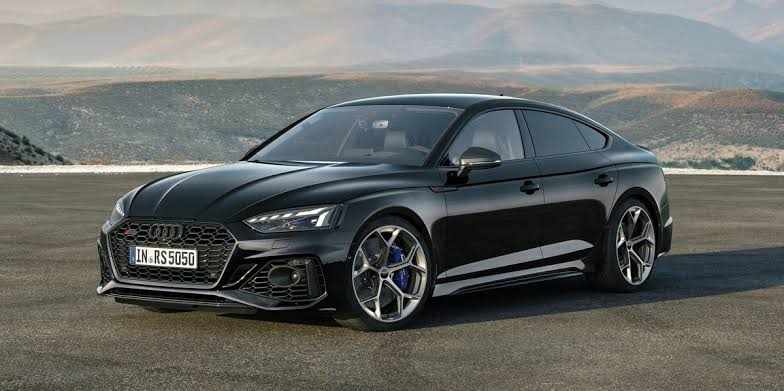
The embodiment of aggressive elegance. With its muscular coupe silhouette and wide
stance, the RS5 is designed to turn heads and conquer roads. It is crafted for those
who demand exquisite design paired with raw, mechanical ferocity—a car that asserts
absolute dominance through every corner.
Audi RS6
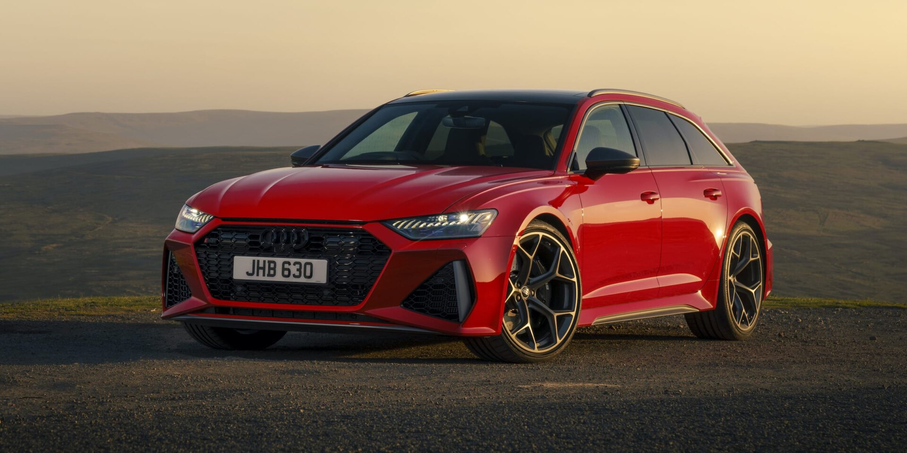
A living legend and the undisputed king of performance wagons. The RS6 recognizes no
rivals, blending an imposing presence with a cavernous interior and power that pins
you to your seat. It is the first choice for those who demand the world’s most
powerful chassis in a bold, practical frame.
Audi RS7
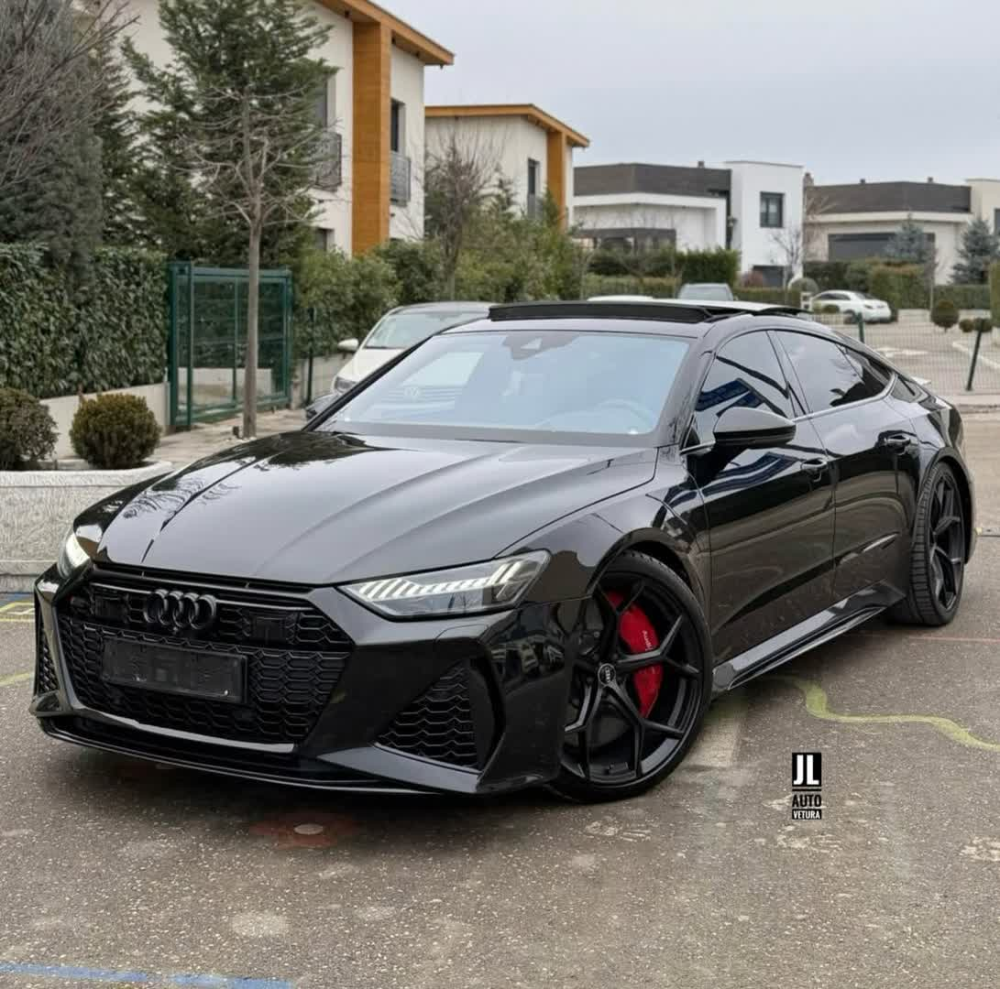
And then, there is the RS7—the ultimate predator and Audi’s masterpiece of high-speed
insanity. This isn't just a car; it is an aerodynamic weapon designed to swallow the
road whole. As a wide-body, four-door Sportback, the RS7 represents the pinnacle of
absolute power and ultra-aggressive styling. When you bury the throttle of this
hyper-sport beast, the line between reality and pure speed dissolves.
The RS7 is built for those who don’t just want to be fast—they want to rule the
asphalt. It is a God-tier fusion of aristocratic luxury and pure, unadulterated
racing violence.
Audi R-Series Production (1998-2025)
| Year |
R8 Coupe |
R8 Spyder |
R8 V10 (All) |
| 2006 | 805 | — | — |
| 2007 | 4,125 | — | — |
| 2008 | 5,656 | — | — |
| 2009 | 2,101 | 350 | 1,420 |
| 2010 | 2,242 | 1,243 | 2,100 |
| 2011 | 2,015 | 1,536 | 2,450 |
| 2012 | 1,342 | 1,204 | 1,980 |
| 2013 | 1,520 | 980 | 2,150 |
| 2014 | 1,240 | 975 | 1,850 |
| 2015 | 1,150 | 925 | 2,010 |
| 2016 | 2,415 | 1,273 | 3,688 |
| 2017 | 1,980 | 1,105 | 3,085 |
| 2018 | 1,120 | 640 | 1,760 |
| 2019 | 1,320 | 720 | 2,040 |
| 2020 | 1,150 | 680 | 1,830 |
| 2021 | 1,020 | 650 | 1,670 |
| 2022 | 680 | 410 | 1,090 |
| 2023 | 520 | 310 | 830 |
| 2024 | 150* | 50* | 200* |
| 2025 | — | — | — |
The R-Series is where Audi stops making cars and starts making legends. This is not a lineup
built for the masses — it is a statement of what becomes possible when engineers are given no
limits and no compromises.
The R8 Coupe is the purest expression of that freedom. Low, wide, and ferociously elegant, it
carries the same aerodynamic DNA as Audi's Le Mans-winning race cars — a road car that was born
on the track and never forgot where it came from.
The R8 Spyder strips away the roof and removes the last barrier between driver and machine. With the
engine screaming inches behind your head and the open sky above, it delivers a sensory experience that
no closed cabin can replicate. This is not transportation — this is theatre.
And then there is the R8 V10. A naturally aspirated 5.2-litre V10 — no turbos, no shortcuts, no compromise.
Just ten cylinders of pure mechanical fury, spinning to 8,700 RPM and producing a sound that has been
described as the closest thing to a Formula 1 car that money can legally put on a public road. In an era where
the industry has abandoned high-revving naturally aspirated engines in favour of efficiency, the R8 V10 stood as
a defiant act of rebellion. It is Audi's greatest achievement. It is one of the last of its kind. And for those
reasons alone, it will never be forgotten.
Audi R8 Coupe
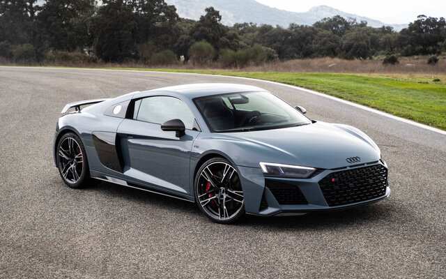
The embodiment of pure engineering and Audi’s bold entry into the supercar elite.
Featuring an ultra-lightweight aluminum space frame and the iconic "Sideblades,"
the R8 Coupe strikes a perfect balance between everyday usability and Le Mans-winning
performance. It is crafted for those who demand track-proven technology wrapped in a
sophisticated, timeless silhouette.
Audi R8 Spyder
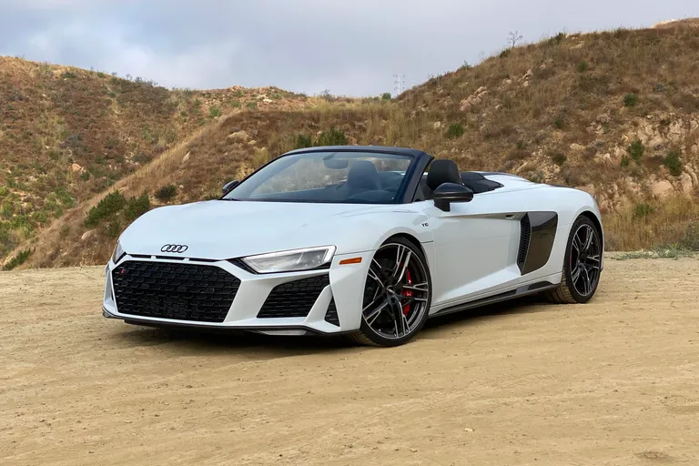
An unfiltered symphony of power; the Spyder is the open-top variant that elevates
driving excitement to a sensory peak. By removing the roof, the barrier between
driver and machine vanishes, allowing the roar of the engine right behind your head
to create a dramatic, unforgettable atmosphere. It is the choice for those who seek
absolute freedom and high-profile style under the open sky.
Audi R8 V10
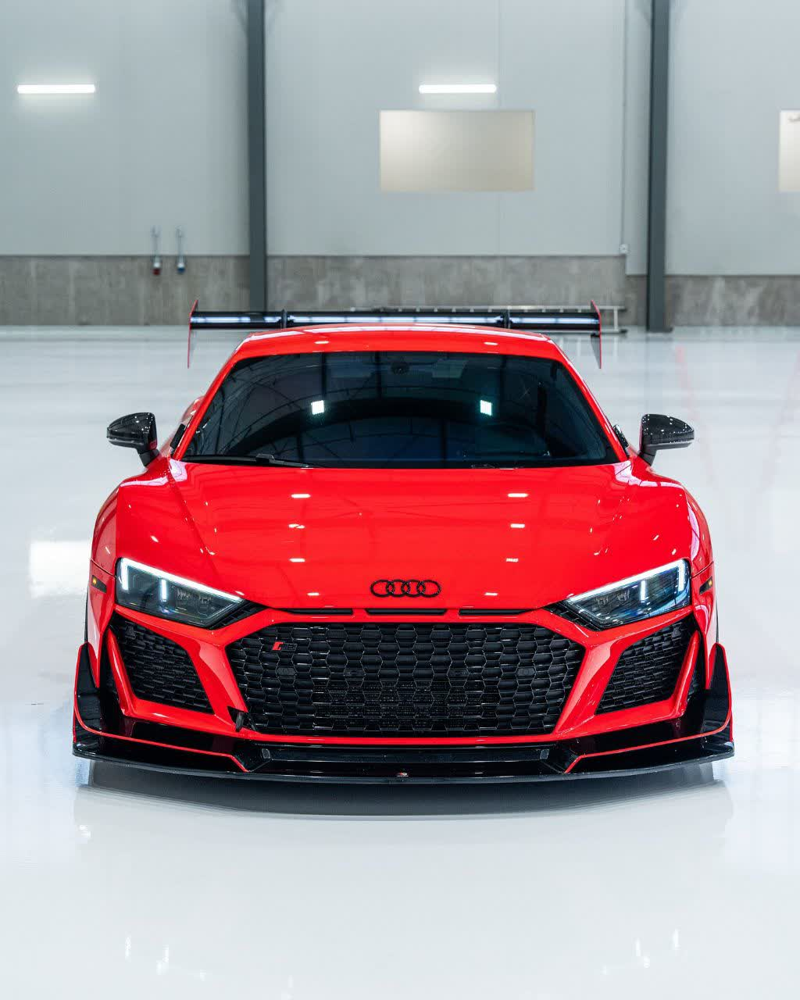
The legendary V10; the beating heart that secured the R8’s place in history.
This naturally aspirated 10-cylinder masterpiece is one of the final icons of
automotive engineering, delivering brutal power and a high-pitched scream
reminiscent of classic Formula 1 cars. The V10 badge is a signature of absolute
dominance and a tribute to the golden era of high-displacement engines, offering
endless, linear acceleration.